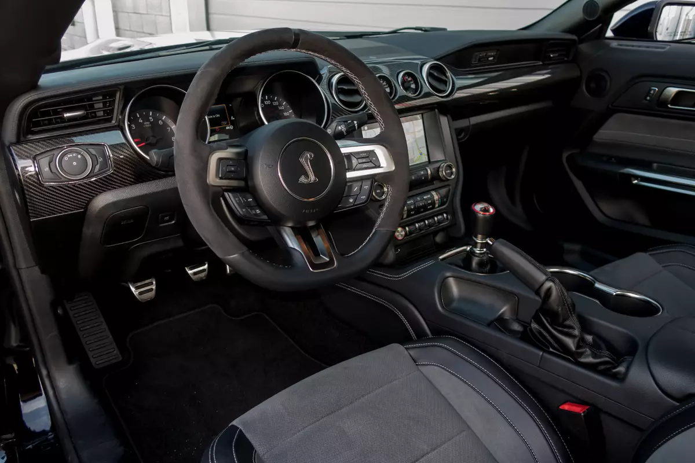
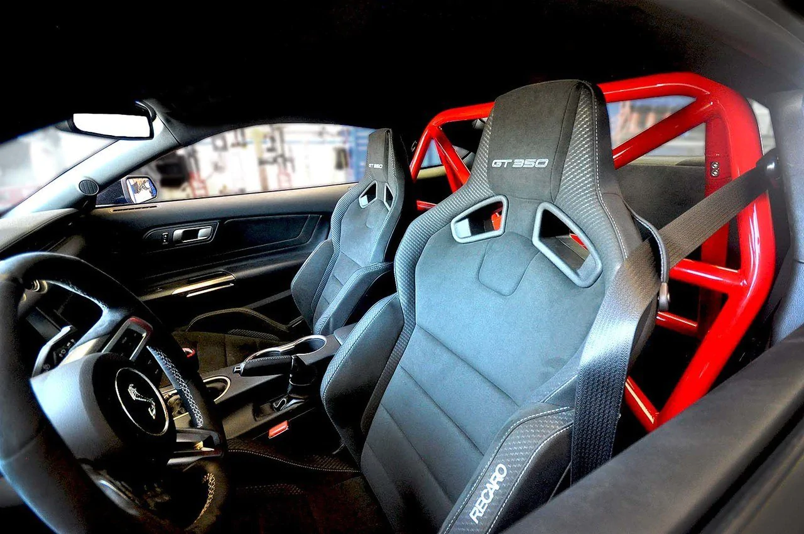
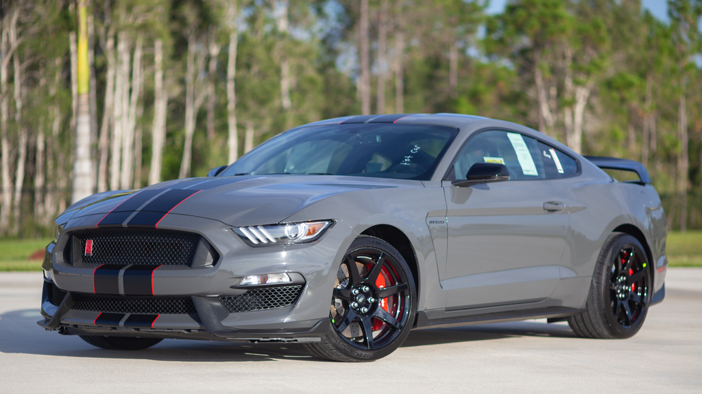

GT350 and GT350R Packages
The Shelby GT350 has package options between a Technology package or Track package. With the technology pack you get BLIS (Blind Spot Information System) cross-traffic alert, Voice-Activated Touch-Screen Navigation System with pinch-to-zoom capability, SiriusXM Traffic and Travel Link radio with an 8 inch screen, B&O Sound System by Bang & Olufsen 12 speakers HD Radio and subwoofer in trunk, heated mirrors, memory leather-trimmed power bucket seats, turn signal indicator and Cobra puddle lamps
The other package of option is the Track package. The pack also included a high-downforce spoiler, engine, transmission and differential oil coolers, as well as an aluminum tower-to-tower brace. This package also comes with the Recaro race seats to keep you planted behind the steering wheel around those s-curves and j-turns. This package only has Fords smaller 4 inch radio screen but who needs music when you can roll the windows down, open the exhaust valve and hear the engine sing!
The other option you have if you plan to only track the car is to get the GT350R edition. The Shelby GT350R utilizes carbon fiber wheels that reduce the weight by 60 pounds. Some systems that many people feel they have to have, such as air conditioning, a rear seat, a stereo system, floor mats, the SYNC 3, and a rear-view camera, are removed to reduce the Mustang GT350R weight. Several of these interior features can be added back in with an electronics package, but that increases the weight, thereby reducing the speed and it also raises the price.
